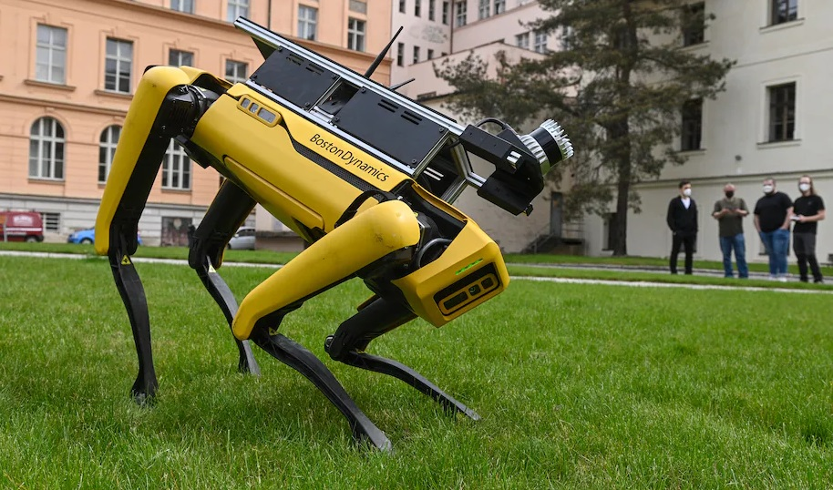

Кратка биографија
Јас сум Матеј Николовски, студент од Скопје кој моментално студира компјутерско инженерство на ФИНКИ. Завршив средно образование во СЕТУГС Михајло Пупин на смерот Компјутерска Техника и Автоматика. Од рана возраст, сум имал длабок интерес кон роботиката и електрониката, воглавно микроконтролерите и нивната општа функција, долго време експериментирам и правам разни видови на мини проекти користејќи развојни плочи како Arduino Uno R3, Arduino Nano, Pi Pico, итн...
Мојата длабока фасцинација во роботиката и како може таа да стане поопширно нешто отколку машини во производство секогаш ме поттикнала активно да се вклучам во многу различни проекти, комбинирајќи го моето теоретско знаење со практичното искуство што сум го стекнал благодарение на сите FOSS форуми поврзани со роботиката, како Hackaday.io, Element14, итн...